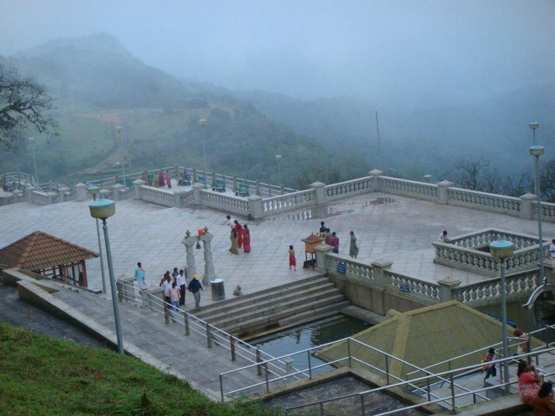
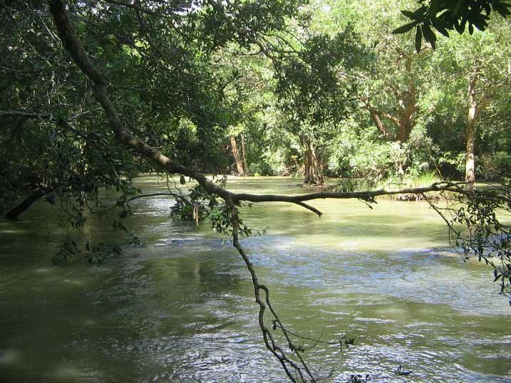

Travel is Life.Couldn't agree more?
we not just discuss travell,
We make it happens

About Talakaveri
At a distance of 9 km from Bhagamandala & 44 km from Madikeri, Talacauvery is the origin of the Cauvery River in Karnataka. It is situated on the slopes of the Brahmagiri mountain ranges near Bhagamandala at an altitude of 1276 m. It is one of the
best places to visit in Coorg and is among prime place to visit on a Coorg trip.
At Talacauvery, there is a square tank called Cauvery Kundike or Brahma Kundike, which is considered to be the birth place of River Cauvery. Here, River Cauvery emerges as a perennial spring and disappears underground.
River Cauvery again emerges at Nagathirtha near Bhagamandala and joins with Kannike and Sujyoti at Triveni Sangam. Bhagamandala is the meeting of three rivers and is also referred to as Triveni Sangam.
History of Talakaveri
According to legend, Cauvery was held captive by sage Agasthya in a Kamandala, a pot carrying sacred water. Lord Ganesha in the form of a crow made the Kamandala to topple at this hill when Sage Agasthya was meditating. There is a shrine dedicated to
Kaveri Amman near the kundike and a big tank in front of it where devotees baths before offering prayers. The temple was renovated by the state government in 2007.
Talacauvery also consists of shrines dedicated to Lord Agastheeshwara and Lord Vinayaka. The Shiva temple here houses a rare and ancient Shivalinga. According to the legend, this is the spot where Lord Shiva appeared before Sage Agasthya
The deity here is known by the name Lord Agastheeshwara.
Tula Sankramana which falls in October is the most auspicious day for visiting Talacauvery, as it is believed that on this day Goddess Cauvery appears on earth, which is indicated by a sudden upsurge of the water in the Cauvery (Brahma) Kundike.
During this festival, the area becomes very attractive with thousands of lights lit in the temples. Taking bath at this spot on Tula Sankramana is considered very sacred.
Things to do at Talakaveri
Apart from being a pilgrimage place, Talacauvery is also a splendid place amidst breathtaking nature. The temple is situated in a breathtaking location in the lap of the Brahmagiri hills. The undulating layer of hills with stretches of green meadows
is truly picturesque. There is a flight of steps leading up to the summit of the Brahmagiri Hill, which offers a feast for nature lovers.
Best time to visit Talakaveri
The temple of Talakaveri is open through out the year. Winter & post monsoon are the best seasons to visit Talakaveri to witness the scenic beauty. Summer is the busiest season in Coorg and all tourist places including Talakaveru are usually crowded.

At a distance of 3 km from Kushalnagar, 7 km from Bylakuppe, 12 km from Dubare Elephant Camp, and 29 km from Madikeri, Cauvery Nisargadhama is an island formed by the River Cauvery in Kodagu district of Karnataka. It is one of the most scenic Coorg tourist places and also a famous picnic spot for the people of Coorg.
this island was developed as a tourist spot in 1988 by the Forest Department. Spread over a sprawling 64-acre land, the island is filled with thick bamboo groves, sandalwood, and teak trees. The island is accessible through a hanging rope bridge. This island also features a deer park, Rabbit Park, Peacock Park, and Orchidarium.
The Island is perfect for a picnic with the children. It is also an ideal destination for those who love nature and spend time by themselves. It is a very good site for seeing parakeets, bee-eaters and woodpeckers, and a variety of butterflies.
Elephant rides and boating are the major attractions here. Tourists are also allowed to get into the water at a few safe points along the river. There are treetop bamboo cottages and forest department guest houses for accommodation. There is one small restaurant as well.
October to April is the best time to visit this island.
Timings: 9 AM - 5 PM
Entry Fee: Rs. 10 for Adult, Rs. 5 for Children, Rs. 25 per Person for Elephant Ride & Rs. 100 per Person for Boating